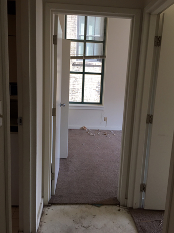
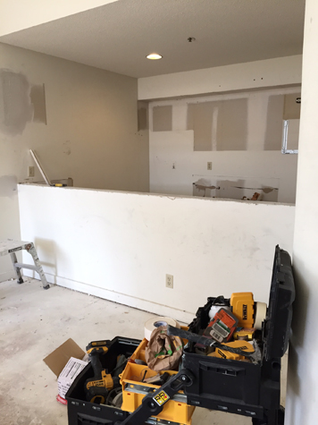
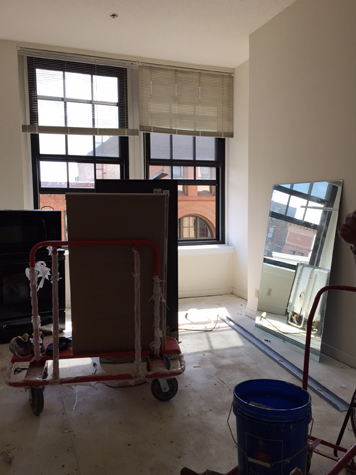

Guarantee Construction Group
2735 Chesire Lane North, Suite 400
Plymouth MN, 55447
6810 N Broadway Suite A
Denver CO 80221
233 S 13th St Suite 1100
Lincoln, NE 68501
2735 Chesire Lane North, Suite 400
Plymouth MN, 55447
6810 N Broadway Suite A
Denver CO 80221
233 S 13th St Suite 1100
Lincoln, NE 68501
Demolition
Guarantee construction group interior demolition services follow the same rigorous commitment to excellence that we apply to every project. We have successfully completed projects in all areas giving us the experience necessary to complete your scope of work effectively in a timely manner.
Our staff and on-site workforce have completed extensive training in both demolition and environmental safety. The pro-active culture and risk control is a direct result of our commitment to provide a safe work place for our employees and the environment.
  